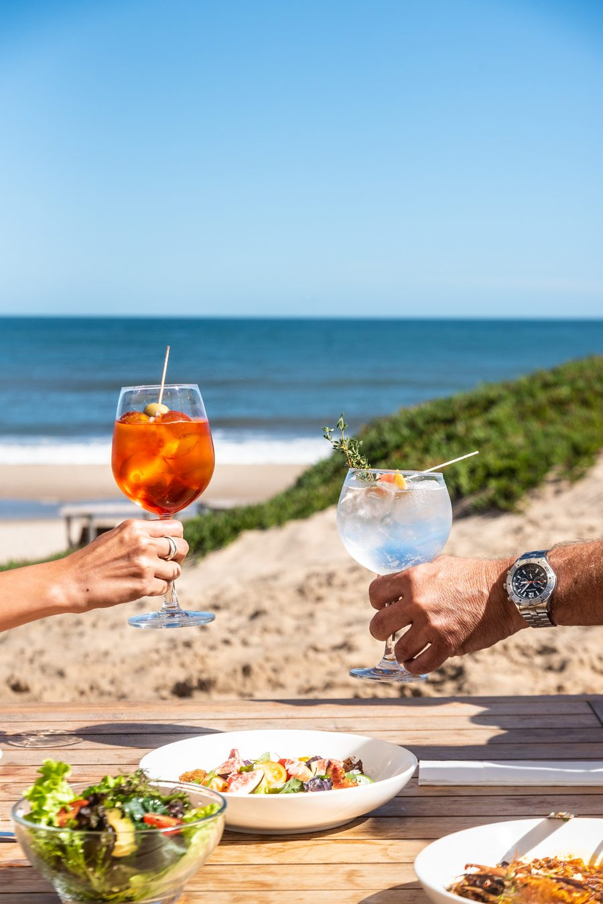
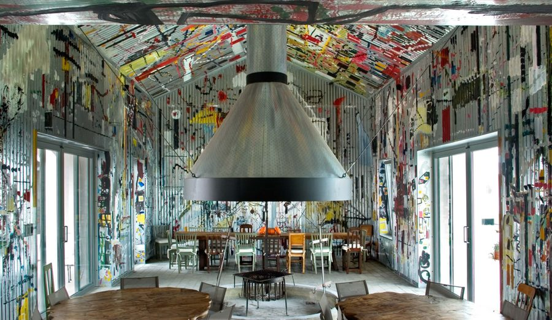
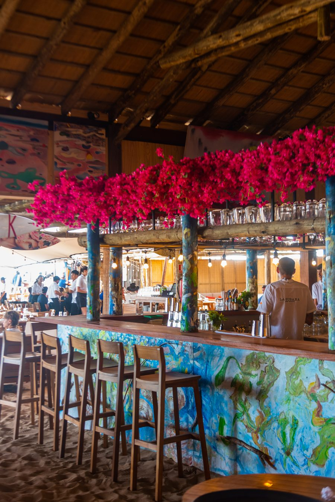
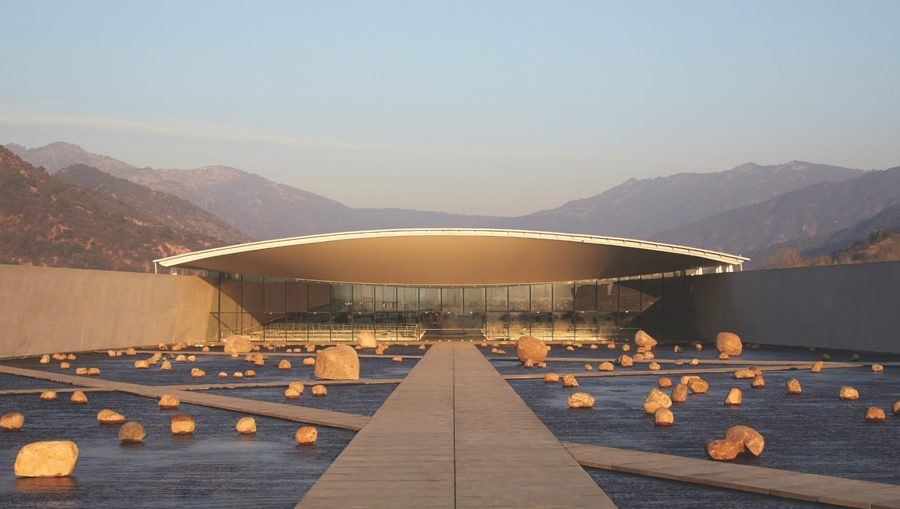
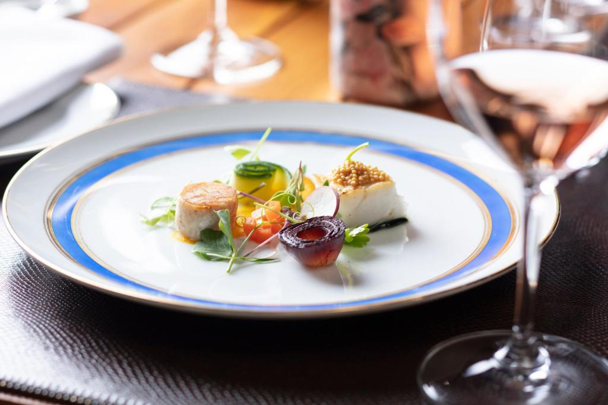
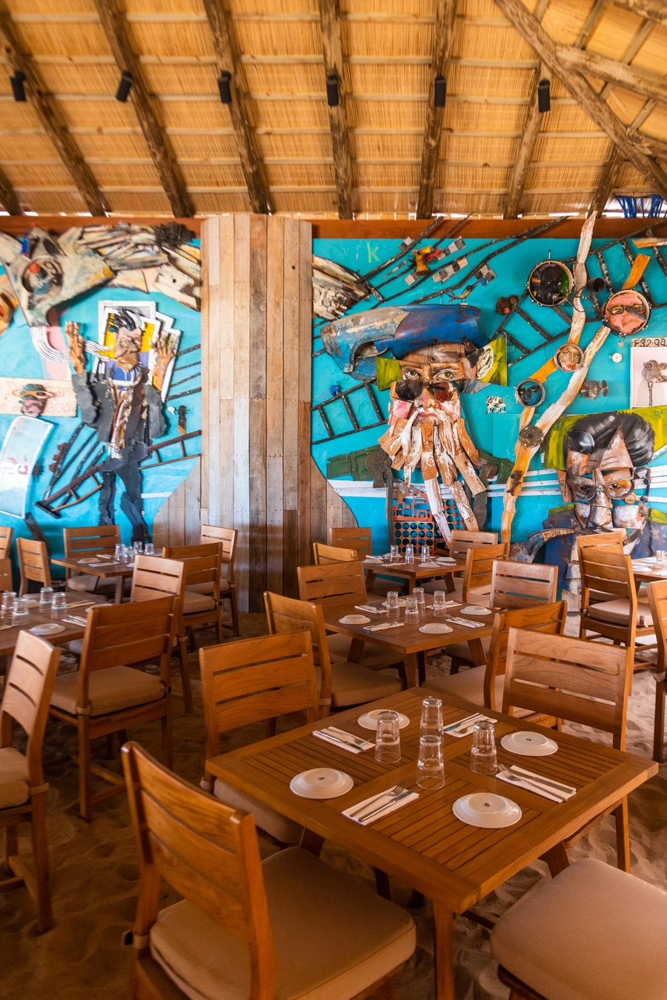
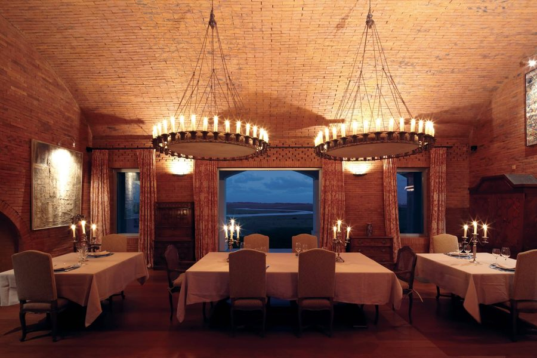
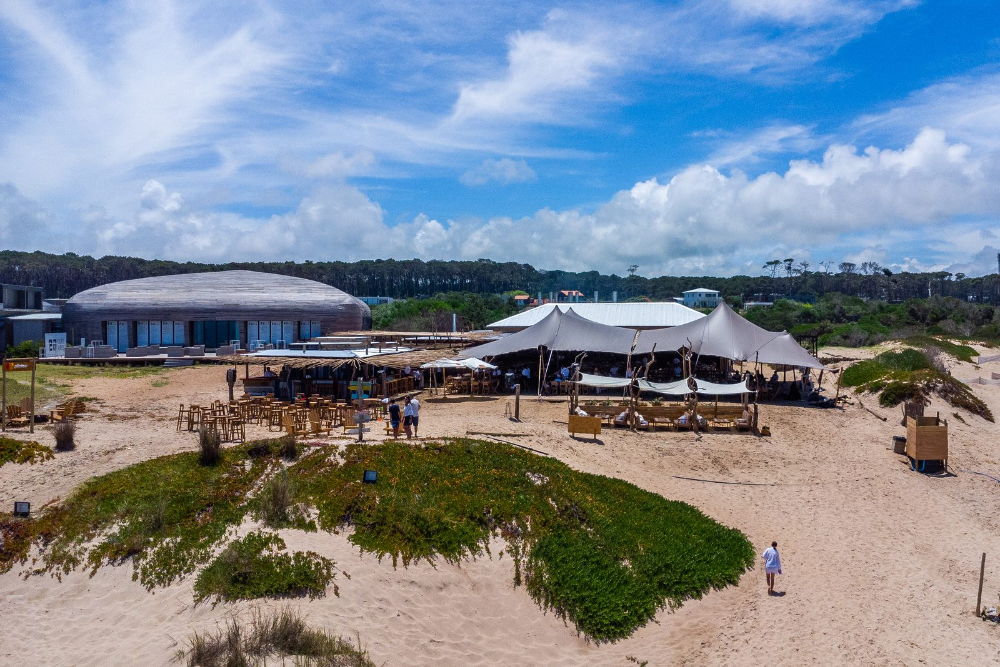

Dining
Open fire, the Atlantic and the Viña VIK cellar. Every house cooks what is around it, and each one tastes like where it stands.
What is on
Drag · five datesWhere flavour meets nourishment.
Four kitchens across the destination, each one built around what grows and swims near it. They are set out here the way you reach them — from the sand inland: La Susana, Zodiaco, El Asador, CieloMar. All four are open to guests of any of the three houses.

La Susana
Feet in the sand, under the bamboo pergolas. Fresh produce from the Atlantic coast and the local organic farm, alongside the Viña VIK cellar.
Lunch runs into sunset, and sunset runs into the bonfire. Its own menu, its own table, a walk along the beach from Bahía.
Zodiaco
Dining at Bahía VIK highlights the surrounding terroir through locally grown and produced ingredients, with a continued emphasis on authentic Uruguayan cuisine.
Eat on the expansive outdoor terrace, by one of the pools, in the open-air patio or in the dining room. The menu runs on fresh fish and seafood.
Book a table
without leaving
Pick the table and the reservation opens here, on this page. No new tab, no second site, no form that somebody has to read in the morning.
Reservations run on Meitre. A table at any of the four is also arranged by your Journey Designer.

El Asador
The most authentic Uruguayan BBQ — family style or three courses, in settings where gaucho tradition sits alongside contemporary Uruguayan art.
Served in the art-filled Parrillero, in the brick vaulted dining room, or by the Absolute Nero pool overlooking the pastoral landscape.
CieloMar
The signature fish BBQ and three-course meals overlooking the Southern Atlantic, with views down Playa Mansa to Punta del Este and to the fishing boats.
Sit in the Parrillero dining room, on the terrace above the beach, or at the brasero fire pit, with a glass of VIK wine.
The origin01 / 02
From the land to the table, and not much further.
Almost everything on the four menus is picked up rather than delivered: a garden inside the estancia, boats that land at La Barra, a farm at Garzón. The only thing that travels is the wine, and it travels for a reason.
-
01
The walled garden
Herbs, leaves, tomatoes and squash, inside the estancia walls. Cut in the morning for the same day — nothing here is picked twice.
0 km · Estancia VIK -
02
The boats at La Barra
Brótola, corvina and calamar, off the small craft that come in at first light. What the sea gave that morning is what the board says at noon.
0 km · the coast road -
03
The organic farm
Beyond Pueblo Garzón: eggs, dairy and the winter vegetables the dune garden will not carry. One van, twice a week, one family.
0 km · Garzón -
04
The cellar at Millahue
The one long journey, and the one worth making. Viña VIK crosses the continent so the last glass of an Uruguayan dinner is a Chilean valley.
0 km · Chile -
05
The fire
Eucalyptus cut on the property and left a year to dry. The last ingredient is the one nobody writes down, and it does not travel at all.
0 km · the woodpile


Distances are to the pass at Estancia VIK. Figures shown are indicative and change with the season.
Book a table at El Asador→Nourishment02 / 02
A dinner here is where the day
finally slows.
Three hours at a table is not a pause in the day — it is the shape of it. Everything before was appetite, and everything after is rest. The kitchens cook for that arc, which is why the last course is small and the fire stays lit long after it.
- 08:00
Thermal
The morning bath at The Shack, before anything is eaten.
- 13:00
The table
Lunch that runs long, in the sand or under the vines.
- 20:30
The fire
Dinner cooked over wood, and the cellar opened.
- Late
Rest
A walk to the room, and the sea still audible from it.

VIK Wellness The other half of the same day. Thermal water, movement and quiet, built to sit either side of a long table. The same kitchens cook for both. Cross over→Fire, coast and countryside.

The bonfire
The cellarSunset from CieloMar has been described as the best on the planet.Playa VIK · José Ignacio
Four tables, twelve kilometres apart.
Three of them sit within sight of the same bay; the fourth is forty minutes inland, where the countryside starts. Touch a name to fly the map, and the film in the marker is what that table looks like.
One message books any of the four.
Every table takes its own reservation through Meitre, and it opens on this page. If you would rather somebody arranged the whole evening — the table, the transfer and what comes after — write instead.

Tell us the night and the number. Someone answers, not a form.
The booking engine opens here, inside the page. Nothing sends you to a second site to finish.
Book a table→